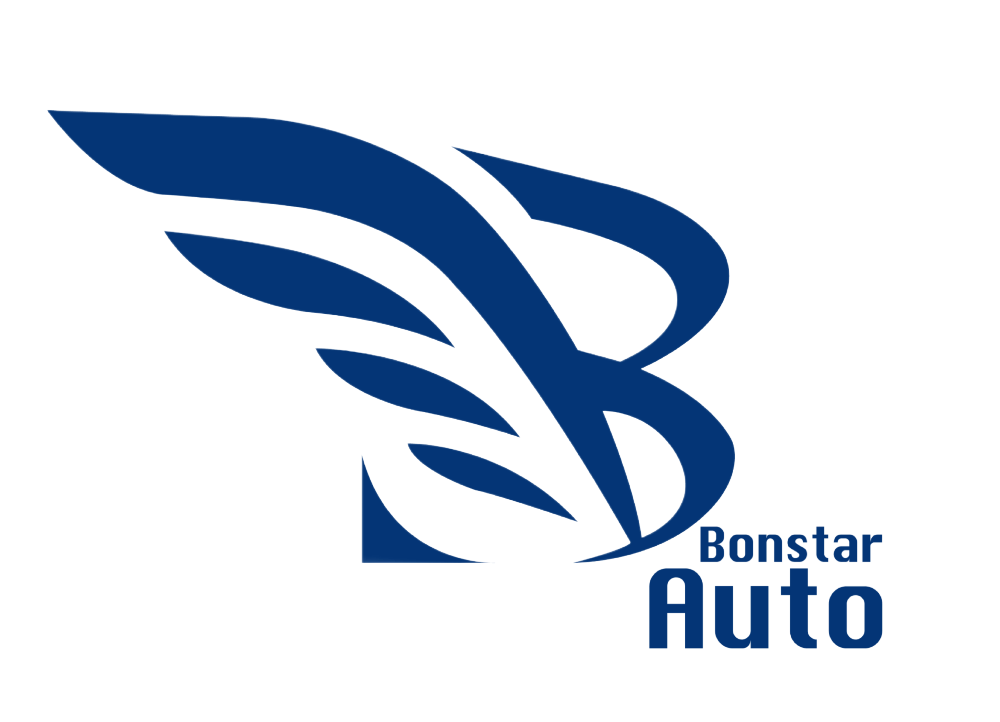

A little bit about me...
I am interested in how technology can communicate and bridge disparities for underserved communities through the scope of cultural history and global development.
I focus on developing impactful, community-oriented solutions leveraging my multidisciplinary expertise to address complex problems and drive meaningful progress. Seeking opportunities to explore new domains and embrace challenges that push me to integrate diverse perspectives into my work.
Currently seeking internships and experiences in information technology and related fields.

Technical Experiences
- Information Technology Specialist Intern at Cornell University
- Engaged in vendor contract administration, focusing on maintaining productive vendor relationships
- Enhanced process documentation for better accessibility and clarity, facilitating smoother operations and team collaboration
- Presented progress reports to staff and leadership, underscoring the impact of IT recovery efforts on organizational well-being
- Content Creation & Digital Marketing Externship Lab at Paragon One
- Acquired proficiency in essential SEO tools including SEMRush
- Analyzed search volume and competition to identify keywords, enhancing online visibility and engagement
- Formulated keyword strategies, creating keyword maps to optimize digital presence with SEO and business goals
- Fellow at Columbia University AI4ALL
- Proposed a project to examine how AI can identify and mitigate facial bias, highlighting the ethical considerations and social impact of AI technologies
- Advocated for the use of larger, more varied data sets, including specific subgroups and categories, to better represent diverse populations and minimize bias
- Explored the role of social work in AI, understanding how interdisciplinary approaches can address ethical and social implications
- Marketing & Strategy Assistant at Kulu Desserts
- Conducted research on companies to develop franchise plans in expanding brand influence
- Introduced marketing strategies to assist in the West Coast Expansion plan
Community Experiences
- China Deep Dive Program at Peking University
- Attended lectures on China’s development, globalization, and cultural heritage. Developed a deeper understanding of Chinese culture, history, and socioeconomic dynamics through insights into international relations and global economic trends.
- Conducted field studies in Zhejiang, Shanghai, and Beijing, gaining insights into regional economic development and global participation through visits to the G20 Hangzhou Summit, Hangzhou City Brain Operation Command Center & Port of Shanghai.
- Explored China's digital economy, smart agriculture, intelligent manufacturing, and the automotive modernization sector.
- Volunteer Coordinator at Better Chinatown
- Organized responsibilities for 50-300 volunteers to assist in local Chinatown community events.
- Connected with local organizations to foster solidarity and awareness of Chinese-American culture.
- Formulated keyword strategies, creating keyword maps to optimize digital presence with SEO and business goals.
- Fellow at Chinatown Youth Initiatives: Summer Leadership Institute
- Engaged in seminars on Asian American history, immigration, anti-blackness, and the role of power, privilege & oppression.
- Led workshop with peers on Asian American representation in sports and media and its implications.


School Involvement
- Cornell Minds Matter
- Asian Pacific Americans for Action
- Startup Consulting
- Early College Awareness
- Information Science Association
- Women in Computing at Cornell
- Coffee Club
- Dragonboat Club